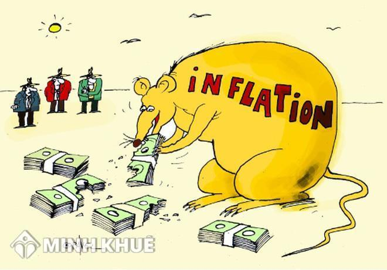
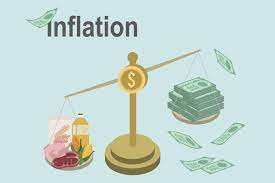

Lạm phát và lãi suất lạm phát tiền tệ là một trong những vấn đề hiện đang được quan tâm. Có thể hiểu, lạm phát tiền tệ chính là sự tăng mức giá hàng hóa và dịch vụ nói chung, nhưng được tăng một cách liên tục theo thời gian, dẫn đến sự mất giá trị của một loại tiền tệ nào đó.
Lý do là vì khi mức giá chung tăng cao thì một đơn vị tiền tệ sẽ mua được ít hàng hóa và dịch vụ hơn trước. Vì vậy, hoàn toàn có thể khẳng định lạm phát sẽ phản ánh sự suy giảm sức mua trên một đơn vị tiền tệ.
Lấy ví dụ cụ thể, ngày hôm trước bạn đi mua xăng chỉ có 10.000 đồng. Hôm sau giá xăng đã tăng chóng mặt, từ 12.000 đồng lên 15.000 đồng, thậm chí nhảy vọt lên 30.000 đồng trong thời gian rất ngắn. Đó chính là biểu hiện của lạm phát Việt Nam. Tương tự giá đồ ăn, giá tiêu dùng cũng sẽ tăng lên một cách chóng mặt theo thời giá thị trường.
Trên thế giới, Việt Nam được đánh giá là một trong số ít quốc gia có tỷ lệ lạm phát cao. Liên tục trong suốt mấy chục năm qua, lạm phát Việt Nam ảnh hưởng rất nhiều đến việc ổn định giá trị của đồng tiền, cũng như những hoạt động kinh doanh sản xuất lẫn tâm lý, đời sống của người dân.
Điều đó dẫn đến việc tìm hiểu, nghiên cứu về lạm phát việt nam là không bao giờ dư thừa. Đây là một trong những nhiệm vụ cấp bách hàng đầu trong thời đại kinh tế 4.0 như hiện nay.
Hiện tại, các chuyên gia có những quan điểm hoàn toàn khác nhau về lạm phát và lãi suất lạm phát. Tuy nhiên, chúng ta có thể tạm chia lạm phát Việt Nam nói riêng và lạm phát tiền tệ nói chung thành 3 cấp độ khác nhau, cụ thể như sau:
Trong ba cấp độ nói trên, ảnh hưởng của lạm phát sẽ tăng dần theo thời gian. Các biểu hiện cũng trầm trọng và khó khắc phục hơn hẳn. Vì vậy, việc chúng ta cần làm là ngăn chặn lạm phát Việt Nam ngay từ trong trứng nước.
Bên cạnh lạm phát là gì nguyên nhân lạm phát ra sao? cũng là một vấn đề bạn cần nghiên cứu kỹ. Chúng ta cùng tìm hiểu ở nội dung tiếp theo nhé!
Nhìn chung, nguyên nhân dẫn đến lạm phát rất đa dạng. Nếu không nghiên cứu cụ thể về lạm phát và lãi suất, ta vẫn có thể rút ra một số nguyên nhân chính như sau:
Ngoài ra, còn có một số chuyên gia đưa ý kiến về các nguyên nhân lạm phát khác nhau. Song, nhìn chung thì bất kỳ nguyên nhân nào cũng có thể dẫn đến tình trạng lạm phát của một quốc gia. Tiếp theo, chúng ta cùng xem thử ảnh hưởng của lạm phát là gì, có những ảnh hưởng tích cực và tiêu cực như thế nào đến nền kinh tế.
Lạm phát không phải bao giờ cũng xấu, gây ảnh hưởng tiêu cực đến nền kinh tế. Nhìn chung, lạm phát tiền tệ có thể tạo ra một số ảnh hưởng tích cực như:
Bên cạnh những ảnh hưởng tích cực, lạm phát tiền tệ cũng mang đến những ảnh hưởng tiêu cực, chẳng hạn như:
Nhìn chung, lạm phát có nhiều ảnh hưởng tiêu cực hơn là tích cực. Khi lạm phát Việt Nam xảy ra, người tiêu dùng trở nên hoang mang, sẽ kéo theo giá hàng hóa tăng cao khiến đời sống người dân chao đảo.
Lạm phát tăng cao, giá cả các loại hàng hóa tăng, dẫn tới nhiều người sẽ gặp khó khăn về vấn đề tài chính. Điều này buộc lòng khách hàng phải tìm tới ngân hàng hoặc công ty tài chính. Thế nhưng, ngân hàng với lãi suất cho vay khá cao, thủ tục phức tạp còn công ty tài chính thì không rõ có uy tín hay không, mất thời gian trong việc chọn lựa nơi vay phù hợp.
Đừng quá lo lắng, bạn có thể đến F88 để vay tiền mặt nhanh bằng đăng ký/ cà vẹt xe máy thủ tục nhanh chóng đơn giản. Đây là đơn vị hoạt động trong lĩnh vực vay vốn và cầm đồ với hơn 10 năm trên thị trường. Để bạn hiểu rõ hơn về vấn đề này, chúng ta sẽ cùng tìm hiểu về F88 ở nội dung cuối cùng các bạn nhé.